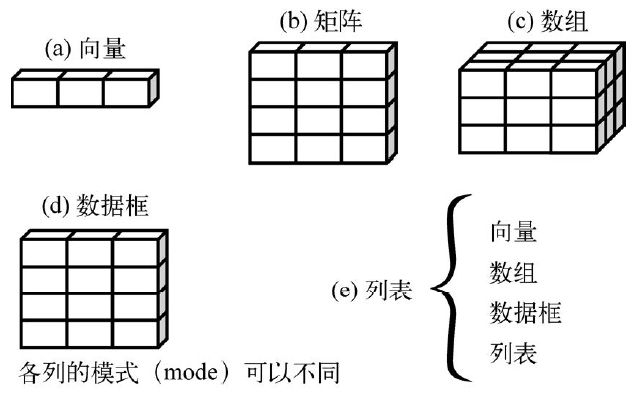
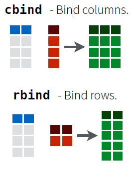
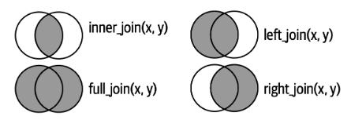

# 创建一个名字是a的向量
a <- c(1, 2, 5, 3, 6, -2, 4)
class(a) # 查看类型
## [1] "numeric"
# 创建一个名字是b的向量，字符型一定要加引号！
b <- c("one", "two", "three")
# 创建一个名字是d的向量，不用c是为了避免和函数 c() 混淆
d <- c(TRUE, TRUE, TRUE, FALSE, TRUE, FALSE)7 数据结构
今天给大家介绍R语言中的数据结构，数据结构就是存储数据的形式。数据结构的概念非常重要，也是必须要理解的内容。
今天的内容可以说是R语言入门中最重要的基础知识了，但同时对于没有任何计算机基础的人来说，也是超级抽象，因为这部分内容和我们医学生日常接触的内容没有任何关系，从这一章开始，也是正式进入了R语言的核心内容。
如果觉得这部分内容太过抽象，难以理解，也不用担心，因为这部分内容虽然复杂，但主要是概念性的内容，有很多东西不用急于理解，只要记住即可。
学习编程就是要多敲代码，大家跟着多敲一敲，自然就记住且理解了。
我们常说的数据操作其实就是对各种数据结构进行操作，你在平常碰到的绝大多数数据清理/整理等问题，说白了就是对数据框、向量、列表等各种结构进行处理，所以这部分内容非常重要。
因为不同的结构有不同的操作方法。比如第5章中读取的brca_clin，其实就是一个数据框（data.frame），我们要做的就是对这个数据框进行各种操作。
R拥有许多用于存储数据的对象类型，包括标量、向量、矩阵、数组、数据框和列表等。它们在存储数据的类型、创建方式、结构复杂度，以及对它们进行操作的方法等均有所不同。下图给出了这些数据结构的一个示意图。

注释
R中有一些术语较为独特，可能会对新用户造成困扰。在R中，对象（object）是指可以赋值给变量的任何事物，包括常量、数据结构、函数，甚至图形。对象都拥有某种模式，描述了此对象是如何存储的，以及某个类（class），像print()这样的泛型函数表明如何处理此对象。 与其他标准统计软件（如SAS、SPSS和Stata）中的数据集类似，数据框（dataframe）是R中用于存储数据的一种结构：列表示变量，行表示观测。在同一个数据框中可以存储不同类型（如数值型、字符型）的变量。数据框将是你用来存储数据集的主要数据结构。
7.1 向量
向量，vector，就是同一类型的多个元素构成的序列，可以是数值型、字符型、逻辑型等。
7.1.1 创建向量
在R中，最基本的创建向量的方法是使用函数c()：
这里，a是数值型向量，b是字符型向量，而d是逻辑型向量。向量中的值被称为元素（element），比如向量a的第一个元素是1，向量b的第一个元素是"one"。
注释
在给对象命名时要注意不要和一些函数或者表示特定意义的字符用相同的名字，比如c/T/F/TRUE/FALSE等等，并且最好不要使用-，因为-在R语言中表示减号，容易引起报错，更推荐大家使用_。
除此之外还有一个初学者经常会遇到的报错是：Error: unexpected xxx（中文报错：错误：意外的xxx），多数情况下是由于标点符号导致的，比如：标点符号不是英文状态下的、没有配对，或者名字拼错、大小写拼错等原因，需认真仔细检查自己的代码。
注意，单个向量中的数据有相同的类型或模式（数值型、字符型或逻辑型）。同一向量中无法混杂不同类型的数据。比如：
# 会都变成字符型
a <- c("a",1,TRUE)
a
## [1] "a" "1" "TRUE"除了通过c()创建向量，还可以使用seq()（sequence的缩写）创建数值型的向量，比如，创建一个从1~20的向量，并且步长设置为2：
# 从1到20，中间间隔2
seq(1, 20, 2)
## [1] 1 3 5 7 9 11 13 15 17 19重复某个值也可以得到一个向量：
# rep是replicate的缩写
rep(1:2, times = 3) # 重复1 2 三次
## [1] 1 2 1 2 1 2
rep(1:2, each = 3) # 重复1三次，重复2三次
## [1] 1 1 1 2 2 2或者最简单的方法，使用数字和冒号，生成连续的数字：
1:5
## [1] 1 2 3 4 5
提示
标量是只含一个元素的向量，例如f <- 3、g <- “US”和h <- TRUE。它们用于保存常量。
7.1.2 探索向量
查看向量长度：
length(d)
## [1] 6查看前6行/后6行：
head(seq(1, 20, 2))
## [1] 1 3 5 7 9 11
tail(seq(1, 20, 2))
## [1] 9 11 13 15 17 19查看唯一元素：
a <- c(1,2,2,3,4,4,4)
# 查看唯一元素
unique(a)
## [1] 1 2 3 4查看一共有几种不同的元素，以及每个元素的个数，也就是计数：
table(a)
## a
## 1 2 3 4
## 1 2 1 37.1.3 根据位置选择向量元素
通过在方括号中指定元素的位置，我们可以访问（或者叫提取、查看）向量中的某个元素。例如：a[c(2, 4)]用于提取向量a中的第二个和第四个元素。更多示例如下：
# 创建一个向量，取名为a
a <- c(1, 2, 5, 3, 6, -2, 4)
a[3] # 取第3个元素
## [1] 5
a[c(1,3,5)] # 取第1，3，5个元素
## [1] 1 5 6
a[c(1:3)] # 取第1到第3个元素
## [1] 1 2 5
a[c(1, 2, 3)] # 和上面结果相同，也是取第1到第3个元素
## [1] 1 2 5如果提取不存在的位置，则会返回NA，比如我们提取第10个元素：
a[10]
## [1] NANA表示“Not Available”，NA是R语言中一种特殊的类型，常用来表示数据缺失。
如何把提取出来的元素保存为另一个变量呢？比如把a里面的第一个元素保存为变量b？直接赋值即可：
# 提取，赋值，即可
b <- a[1]
b
## [1] 17.1.4 替换、删除、增加
如果要替换某个元素，直接提取这个元素并赋予要替换的值即可：
a <- c(1, 2, 5, 3, 6, -2, 4)
# 把向量a的第1个元素换成 m
a[1] <- "m"
a # 注意，此时全部变成字符型了哦！
## [1] "m" "2" "5" "3" "6" "-2" "4"
# 同时替换多个元素，注意长度要相同，并且要使用c()放在一个向量中
a[c(1,3,4)] <- c("d","e","f")
a
## [1] "d" "2" "e" "f" "6" "-2" "4"如果要删除某个元素，直接在位置前加负号即可：
a <- c(1, 2, 5, 3, 6, -2, 4)
# 删除a的第一个元素，结果中第一个元素 1 就被删掉了
a[-1]
## [1] 2 5 3 6 -2 4
# 但此时你打印a会发现a还是1, 2, 5, 3, 6, -2, 4，
a
## [1] 1 2 5 3 6 -2 4
# 如果要获得修改后的a，一定要重新赋值！
a <- a[-1]
a # 此时a就是修改后的了
## [1] 2 5 3 6 -2 4
# 同时删除多个元素
a <- c(1, 2, 5, 3, 6, -2, 4)
# 直接把要删除的元素位置放在c()中即可
a[c(-1,-2,-3)]
## [1] 3 6 -2 4
# 如果要获得修改后的a，一定要重新赋值！
a <- a[c(-1,-2,-3)]
a
## [1] 3 6 -2 4如果要继续增加元素，直接使用c()即可：
# 在向量a中添加3个元素，并赋值给a1
# 注意由于"80", "89", "90"都加了引号，所以修改后的a都变成了字符型
a1 <- c(a, "80", "89", "90")
a1
## [1] "3" "6" "-2" "4" "80" "89" "90"7.1.5 根据名字选择向量元素
还可以对向量中的每一个元素取一个名字，比如：
# 创建一个命名向量，别用-，更推荐用_
named_a <- c(age = 18, bmi = 22, weight = 65)
named_a
## age bmi weight
## 18 22 65此时，向量named_a中的3个元素，都有一个独一无二的名字，此时我们还可以通过向量的名字来访问对应的元素：
named_a["age"]
## age
## 18
named_a["bmi"]
## bmi
## 22查看每个元素的名字（如果这是一个命名向量的话）：
names(named_a)
## [1] "age" "bmi" "weight"替换元素的名字：
# 替换第一个元素的名字，从age变为height
names(named_a)[1] <- "height"
named_a
## height bmi weight
## 18 22 65
# 同时替换多个元素的名字
names(named_a)[c(1,2)] <- c("height","gg")
#names(named_a)[1:2] <- c("height","gg")
named_a
## height gg weight
## 18 22 65
# 同时替换所有元素的名字
names(named_a) <- c("aa","bb","cc")
named_a
## aa bb cc
## 18 22 65移除元素的名字：
# 移除元素的名字，注意不能只移除某个元素的名字，要一起移除
names(named_a) <- NULL
named_a
## [1] 18 22 657.1.6 根据表达式选择向量元素
除了通过位置和名字选择元素外，还可以通过表达式（也就是TRUE或者FALSE）：
a <- c(1,2,3,10,11)
a[a==10] # 选择等于10的元素
## [1] 10
a[a<5] # 选择小于5的元素
## [1] 1 2 3
a[a %in% c(2,3,11)] # 选择在(2,3,11)里面的元素，很常用
## [1] 2 3 117.1.7 向量排序
如果要对向量排序：
# 创建一个向量a
a <- c(4,1,2,3)
a
## [1] 4 1 2 3
# 排序，默认按照从小到大
sort(a)
## [1] 1 2 3 4
# 按照从大到小的顺序排列
sort(a, decreasing = T)
## [1] 4 3 2 1
# 反转顺序
rev(a)
## [1] 3 2 1 4order函数返回的是向量元素的一个排列索引，它不是直接对数据进行排序，而是告诉你如何对数据进行排序。
a <- c(4,1,2,3)
a
## [1] 4 1 2 3
order(a)
## [1] 2 3 4 1order(a)的结果中，第一个数字是2，意思是：原向量a中的第2个元素（也就是1）应该放在第1位，第2个数字是3，意思是：原向量中的第3个元素（也就是2）应该放在第2位…
所以order返回的是原始向量排序后的位置，我们就可以使用这些位置对向量进行排序：
# 默认从小到大
a[order(a)] # 等价于sort(a)
## [1] 1 2 3 4也可以从大到小：
a[order(a, decreasing = T)]
## [1] 4 3 2 17.1.8 去重复
a <- c(1,2,2,3,4,4,4)
# 查看是否有重复
duplicated(a)
## [1] FALSE FALSE TRUE FALSE FALSE TRUE TRUE!表示“非”，也就是反向选择：
!duplicated(a)
## [1] TRUE TRUE FALSE TRUE TRUE FALSE FALSE通过反向选择的方式去重，非常重要的方法：
# 通过反选的方式去重，很重要,!表示反选
a[!duplicated(a)]
## [1] 1 2 3 47.1.9 两个向量的操作
取两个向量的交集、并集、差集。
假设有两个向量如下：
a <- c(1,2,3,4)
b <- c(1,2,3,5,6)取两个向量中共有的元素（交集）：
intersect(a,b)
## [1] 1 2 3取并集：
union(a,b)
## [1] 1 2 3 4 5 6取向量a有但是b没有的元素（差集）：
setdiff(a,b)
## [1] 4取向量b有但是a没有的元素（差集）：
setdiff(b,a)
## [1] 5 67.2 数据框
数据框，data.frame，可能是大家最常用的数据结构了。我们的excel数据读进来一般默认都是数据框结构。
数据框由不同的行和列构成，不同的列可以是不同类型（数值型、字符型、逻辑型等）的数据，比如可以其中一列是数值型，另一列是逻辑型，另一列是字符型，等。但是同一列中必须是相同的类型。
7.2.1 创建数据框
数据框可通过函数data.frame()创建，使用方式如下：
mydata <- data.frame(col1, col2, col3,...)其中的列向量col1、col2、col3等可为任何类型（如字符型、数值型或逻辑型）。
以下代码会创建一个数据框，这个数据框有4列，第一列的名字是patientID，是数值型；第二列的名字是age，也是数值型；第三列的名字是diabetes，是字符型；第4列的名字是status，也是字符型：
# 创建4个向量
patientID <- c(1, 2, 3, 4)
age <- c(25, 34, 28, 52)
diabetes <- c("Type1", "Type2", "Type1", "Type1")
status <- c("Poor", "Improved", "Excellent", "Poor")
# 把4个向量放到一个数据框中
patientdata <- data.frame(patientID, age, diabetes, status)
patientdata
## patientID age diabetes status
## 1 1 25 Type1 Poor
## 2 2 34 Type2 Improved
## 3 3 28 Type1 Excellent
## 4 4 52 Type1 Poor我们首先建立了4个向量，然后使用函数data.frame()将4个向量组合在一起，就变成了一个数据框data.frame，所以你也可以把数据框看成是多个向量的组合。
当你对这个操作足够熟悉后，你也可以直接这样写：
patientdata <- data.frame(
patientID = c(1, 2, 3, 4),
age = c(25, 34, 28, 52),
diabetes = c("Type1", "Type2", "Type1", "Type1"),
status = c("Poor", "Improved", "Excellent", "Poor")
)
patientdata
## patientID age diabetes status
## 1 1 25 Type1 Poor
## 2 2 34 Type2 Improved
## 3 3 28 Type1 Excellent
## 4 4 52 Type1 Poor
class(patientdata)
## [1] "data.frame"上一章中从外部读取的数据，默认就是数据框结构：
library(readxl)
brca_expr <- read_xlsx("datasets/brca_expr.xlsx", col_names = T)
class(brca_expr)
## [1] "tbl_df" "tbl" "data.frame"
注释
readxl是tidyverse系列R包的一员，如果你使用了这个系列的R包，那么默认的数据框就不再单单是data.frame类型，还会增加tbl_df和tbl类型，这会在某些操作中报错，千万要注意。
如何变成单纯的data.frame类型？只需要使用as.data.frame()函数即可：
# 转换类型
brca_expr <- as.data.frame(brca_expr)
class(brca_expr) # 查看类型
## [1] "data.frame"7.2.2 探索数据框
查看数据框的基本信息，比如，有几行几列？每一列是什么类型？列名是什么？
# 像Excel一样查看数据框，注意，数据太大会直接卡死
View(patientdata) # 或者在环境面板中直接点击数据框名字
# 查看类型
class(patientdata) # 数据框
## [1] "data.frame"
# 查看数据框的维度，dim是dimension的缩写
dim(patientdata)
## [1] 4 4
# 查看几行几列
ncol(patientdata)
## [1] 4
nrow(patientdata)
## [1] 4
# 查看数据框的结构：str是structure的缩写
str(patientdata)
## 'data.frame': 4 obs. of 4 variables:
## $ patientID: num 1 2 3 4
## $ age : num 25 34 28 52
## $ diabetes : chr "Type1" "Type2" "Type1" "Type1"
## $ status : chr "Poor" "Improved" "Excellent" "Poor"
# 查看前6行和最后6行
head(patientdata)
## patientID age diabetes status
## 1 1 25 Type1 Poor
## 2 2 34 Type2 Improved
## 3 3 28 Type1 Excellent
## 4 4 52 Type1 Poor
tail(patientdata)
## patientID age diabetes status
## 1 1 25 Type1 Poor
## 2 2 34 Type2 Improved
## 3 3 28 Type1 Excellent
## 4 4 52 Type1 Poor
# 默认是6行，可以更改，比如改成2行
head(patientdata, 2)
## patientID age diabetes status
## 1 1 25 Type1 Poor
## 2 2 34 Type2 Improved
# 查看数据框的列名
names(patientdata)
## [1] "patientID" "age" "diabetes" "status"
# 或者使用以下方法查看列名
colnames(patientdata)
## [1] "patientID" "age" "diabetes" "status"
# 查看行名
rownames(patientdata)
## [1] "1" "2" "3" "4"
# 总结数据信息，摘要
summary(patientdata)
## patientID age diabetes status
## Min. :1.00 Min. :25.00 Length:4 Length:4
## 1st Qu.:1.75 1st Qu.:27.25 Class :character Class :character
## Median :2.50 Median :31.00 Mode :character Mode :character
## Mean :2.50 Mean :34.75
## 3rd Qu.:3.25 3rd Qu.:38.50
## Max. :4.00 Max. :52.007.2.3 行列选择
如果我们要选择其中的某些行或者某些列，或者某个元素（比如，第2行第3列的值），有多种不同的方法实现。
可以通过方括号实现，就像访问向量的元素一样。
数据框和向量不一样，向量是一维的，数据框既有行也有列，数据框是二维的，所以在使用方括号时，我们也要指定行和列，行和列之间用,隔开，,前面表示行，后面表示列。
以下是常见方法，必须要记住：
patientdata[1, 2] # 取第1行第2列的值
## [1] 25
patientdata[1:2,] # 取第1行到第2行，以及所有列，省略数字就是取所有
## patientID age diabetes status
## 1 1 25 Type1 Poor
## 2 2 34 Type2 Improved
patientdata[, 1:3] # 取所有行，以及第1列到第3列
## patientID age diabetes
## 1 1 25 Type1
## 2 2 34 Type2
## 3 3 28 Type1
## 4 4 52 Type1
patientdata[c(1,4), c(1,3)] # 取第1行和第4行，以及第1列和第3列
## patientID diabetes
## 1 1 Type1
## 4 4 Type1如果你在方括号中不写,，那么默认是选取其中的列和所有行：
patientdata[c(1,3)] # 取第1列和第3列，所有的行
## patientID diabetes
## 1 1 Type1
## 2 2 Type2
## 3 3 Type1
## 4 4 Type1除了使用数字序号这种，也可以直接使用列名进行选取（是不是和向量操作非常像？）：
patientdata[, "patientID"] # 取patientID这一列和所有的行 ,可省略，下面的也是
## [1] 1 2 3 4
patientdata[, c("patientID", "diabetes")] # 取patientID和diabetes两列及所有行
## patientID diabetes
## 1 1 Type1
## 2 2 Type2
## 3 3 Type1
## 4 4 Type1除了使用方括号，还可以使用美元符号$选取列：
# 选取patientID这一列
patientdata$patientID
## [1] 1 2 3 4如果要同时选择部分行和列，还有一个专门的函数subset()：
subset(patientdata, # 数据
age > 30, # 选择行，age>30的行
select = c("patientID","diabetes","age") # 选择列
)
## patientID diabetes age
## 2 2 Type2 34
## 4 4 Type1 52patientdata这个数据集有4列，每一列都有一个列名，我们可以通过列名很轻松的选取其中的列，但是这个数据集没有行名，我们可以给它添加行名，这个数据共有4行，所以我们要准备4个名字，然后使用rownames()添加行名：
# 准备4个名字
rws <- c("第一行", "第二行", "第三行", "第四行")
# 添加行名：
rownames(patientdata) <- rws
patientdata
## patientID age diabetes status
## 第一行 1 25 Type1 Poor
## 第二行 2 34 Type2 Improved
## 第三行 3 28 Type1 Excellent
## 第四行 4 52 Type1 Poor这样就可以通过行名选择你想要的行了，比如选择第1行和第3行，所有的列：
patientdata[c("第一行", "第三行"), ]
## patientID age diabetes status
## 第一行 1 25 Type1 Poor
## 第三行 3 28 Type1 Excellent选择年龄大于30岁的行以及第2列和第3列：
patientdata[patientdata$age > 30, c(2,3)]
## age diabetes
## 第二行 34 Type2
## 第四行 52 Type1此时其实是通过TRUE/FALSE进行选择，首先看patientdata$age > 30：
# 第2个和第4个是TRUE，所以就是选择第2行和第4行
patientdata$age > 30
## [1] FALSE TRUE FALSE TRUE这种方法非常有用，大家一定要记住。
7.2.4 增加/删除行列
增加行列，删除行列：
# 增加1列weight
patientdata$weight <- c(20,30,40,50)
patientdata
## patientID age diabetes status weight
## 第一行 1 25 Type1 Poor 20
## 第二行 2 34 Type2 Improved 30
## 第三行 3 28 Type1 Excellent 40
## 第四行 4 52 Type1 Poor 50
# 删除第2列，
# 注意，此时不重新赋值的话其实patientdata是没有变化的，和向量一样
patientdata[,-2]
## patientID diabetes status weight
## 第一行 1 Type1 Poor 20
## 第二行 2 Type2 Improved 30
## 第三行 3 Type1 Excellent 40
## 第四行 4 Type1 Poor 50
# 或者使用以下方法删除列，这种方法不用重新赋值
patientdata$weight <- NULL
patientdata
## patientID age diabetes status
## 第一行 1 25 Type1 Poor
## 第二行 2 34 Type2 Improved
## 第三行 3 28 Type1 Excellent
## 第四行 4 52 Type1 Poor
#patientdata[,- "age"] # 这种写法是错误的7.2.5 修改和重编码
patientdata <- data.frame(
patientID = c(1, 2, 3, 4),
age = c(25, 34, 28, 52),
diabetes = c("Type1", "Type2", "Type1", "Type1"),
status = c("Poor", "Improved", "Excellent", "Poor")
)
patientdata
## patientID age diabetes status
## 1 1 25 Type1 Poor
## 2 2 34 Type2 Improved
## 3 3 28 Type1 Excellent
## 4 4 52 Type1 Poor比如，把diabetes这一列中的Type1变成类型1：
# 选择要修改的列，选择要修改的值，重新赋值即可
patientdata$diabetes[patientdata$diabetes == "Type1"] <- "类型1"
patientdata
## patientID age diabetes status
## 1 1 25 类型1 Poor
## 2 2 34 Type2 Improved
## 3 3 28 类型1 Excellent
## 4 4 52 类型1 Poor把age这一列中大于30岁的变成中年人，小于等于30岁的变成青年人：
patientdata$age[patientdata$age > 30] <- "中年人"
patientdata$age[patientdata$age <= 30] <- "青年人"
patientdata
## patientID age diabetes status
## 1 1 青年人 类型1 Poor
## 2 2 中年人 Type2 Improved
## 3 3 青年人 类型1 Excellent
## 4 4 中年人 类型1 Poor7.2.6 行列转置
行变成列，列变成行，也就是旋转90°：
patientdata
## patientID age diabetes status
## 1 1 青年人 类型1 Poor
## 2 2 中年人 Type2 Improved
## 3 3 青年人 类型1 Excellent
## 4 4 中年人 类型1 Poor
pdt <- t(patientdata) # transpose缩写
pdt
## [,1] [,2] [,3] [,4]
## patientID "1" "2" "3" "4"
## age "青年人" "中年人" "青年人" "中年人"
## diabetes "类型1" "Type2" "类型1" "类型1"
## status "Poor" "Improved" "Excellent" "Poor"
class(pdt)
## [1] "matrix" "array"数据框转置后会变成矩阵，如果要变成数据框，使用as.data.frame()即可：
pdt <- as.data.frame(t(patientdata))
pdt
## V1 V2 V3 V4
## patientID 1 2 3 4
## age 青年人 中年人 青年人 中年人
## diabetes 类型1 Type2 类型1 类型1
## status Poor Improved Excellent Poor
class(pdt)
## [1] "data.frame"7.2.7 行列拼接
可以分为:
- 拼接列：把列拼起来，也就是对多个数据框水平堆叠，也就是在一个数据框的右侧添加另一个数据框，要求行数相同
- 拼接行：把行拼起来，也就是对多个数据框垂直堆叠，也就是在一个数据框的下方添加另一个数据框，要求列数相同

比如现在如下两个数据框df1和df2：
df1 # 3行4列
## # A tibble: 3 × 4
## barcode patient sample sample_type
## <chr> <chr> <chr> <chr>
## 1 TCGA-BH-A1FC-11A-32R-A13Q-07 TCGA-BH-A1FC TCGA-BH-A1FC-11A Solid Tissue Normal
## 2 TCGA-AC-A2FM-11B-32R-A19W-07 TCGA-AC-A2FM TCGA-AC-A2FM-11B Solid Tissue Normal
## 3 TCGA-BH-A0DO-11A-22R-A12D-07 TCGA-BH-A0DO TCGA-BH-A0DO-11A Solid Tissue Normal
df2 # 3行5列
## # A tibble: 3 × 5
## initial_weight ajcc_pathologic_stage days_to_last_follow_up gender
## <dbl> <chr> <chr> <chr>
## 1 260 Stage IIA NA female
## 2 220 Stage IIB NA female
## 3 130 Stage I 1644 female
## # ℹ 1 more variable: age_at_index <dbl>现在我们把两个数据框按列拼接：
cbind(df1, df2) # column bind，变成3行9列
## barcode patient sample
## 1 TCGA-BH-A1FC-11A-32R-A13Q-07 TCGA-BH-A1FC TCGA-BH-A1FC-11A
## 2 TCGA-AC-A2FM-11B-32R-A19W-07 TCGA-AC-A2FM TCGA-AC-A2FM-11B
## 3 TCGA-BH-A0DO-11A-22R-A12D-07 TCGA-BH-A0DO TCGA-BH-A0DO-11A
## sample_type initial_weight ajcc_pathologic_stage
## 1 Solid Tissue Normal 260 Stage IIA
## 2 Solid Tissue Normal 220 Stage IIB
## 3 Solid Tissue Normal 130 Stage I
## days_to_last_follow_up gender age_at_index
## 1 NA female 78
## 2 NA female 87
## 3 1644 female 78假如还有两个数据框df3和df4：
df3 # 3行2列
## # A tibble: 3 × 2
## barcode patient
## <chr> <chr>
## 1 TCGA-BH-A1FC-11A-32R-A13Q-07 TCGA-BH-A1FC
## 2 TCGA-AC-A2FM-11B-32R-A19W-07 TCGA-AC-A2FM
## 3 TCGA-BH-A0DO-11A-22R-A12D-07 TCGA-BH-A0DO
df4 # 2行2列
## # A tibble: 2 × 2
## barcode patient
## <chr> <chr>
## 1 TCGA-E2-A1BC-11A-32R-A12P-07 TCGA-E2-A1BC
## 2 TCGA-BH-A0BJ-11A-23R-A089-07 TCGA-BH-A0BJ进行按行拼接：
rbind(df3,df4) # row bind，变成5行2列
## # A tibble: 5 × 2
## barcode patient
## <chr> <chr>
## 1 TCGA-BH-A1FC-11A-32R-A13Q-07 TCGA-BH-A1FC
## 2 TCGA-AC-A2FM-11B-32R-A19W-07 TCGA-AC-A2FM
## 3 TCGA-BH-A0DO-11A-22R-A12D-07 TCGA-BH-A0DO
## 4 TCGA-E2-A1BC-11A-32R-A12P-07 TCGA-E2-A1BC
## 5 TCGA-BH-A0BJ-11A-23R-A089-07 TCGA-BH-A0BJ7.2.8 数据框合并
具有共同信息的两个数据框可以合并到一个数据框中。比如表格1中包含甲乙丙丁4个病人的年龄和性别信息，表格2中包含甲乙丙丁4个病人的生化指标，那么这样的两个表格就可以合并到一个表格中。
df1 <- data.frame(
patientID = c("甲","乙","丙","丁"),
age = c(23,43,45,34),
gender = c("男","女","女","男")
)
df2 <- data.frame(
patientID = c("甲","乙","丙","丁"),
hb = c(110,124,138,142),
wbc = c(3.7,4.6,6.4,4.2)
)
df1
## patientID age gender
## 1 甲 23 男
## 2 乙 43 女
## 3 丙 45 女
## 4 丁 34 男
df2
## patientID hb wbc
## 1 甲 110 3.7
## 2 乙 124 4.6
## 3 丙 138 6.4
## 4 丁 142 4.2这两个数据框储存着同一批病人（都是甲乙丙丁4个人）的不同信息，直接拼接起来不是我们想要的结果，因为patientID会出现两次：
cbind(df1,df2)
## patientID age gender patientID hb wbc
## 1 甲 23 男 甲 110 3.7
## 2 乙 43 女 乙 124 4.6
## 3 丙 45 女 丙 138 6.4
## 4 丁 34 男 丁 142 4.2正确的方法是根据两个数据框共有的信息把它们合并起来。这两个数据框共有的信息是patientID这一列，表示的都是甲乙丙丁4个病人，这种情况的正确做法是使用merge函数。
# 根据共有信息合并2个数据框
df3 <- merge(df1, df2, by = "patientID")
df3
## patientID age gender hb wbc
## 1 丙 45 女 138 6.4
## 2 丁 34 男 142 4.2
## 3 甲 23 男 110 3.7
## 4 乙 43 女 124 4.6顺序不一样也没有影响，会自动对应好。比如下面这个数据框，它的顺序不是甲乙丙丁，而是甲丁乙丙：
df4 <- df2[order(df2$wbc),]
df4
## patientID hb wbc
## 1 甲 110 3.7
## 4 丁 142 4.2
## 2 乙 124 4.6
## 3 丙 138 6.4这个数据框和df1也可以直接合并，不会出错：
merge(df1, df4)
## patientID age gender hb wbc
## 1 丙 45 女 138 6.4
## 2 丁 34 男 142 4.2
## 3 甲 23 男 110 3.7
## 4 乙 43 女 124 4.6两个数据框共有信息的名字不一样也可以！
# 这个数据框表示病人ID的列名是id，不是patientID
names(df4)[1] <- "id"
df4
## id hb wbc
## 1 甲 110 3.7
## 4 丁 142 4.2
## 2 乙 124 4.6
## 3 丙 138 6.4
df1
## patientID age gender
## 1 甲 23 男
## 2 乙 43 女
## 3 丙 45 女
## 4 丁 34 男也可以直接合并，只要指定各自的列名即可：
merge(df1,df4, by.x = "patientID", by.y = "id")
## patientID age gender hb wbc
## 1 丙 45 女 138 6.4
## 2 丁 34 男 142 4.2
## 3 甲 23 男 110 3.7
## 4 乙 43 女 124 4.6这就是表格的合并，也就是把存储相同信息的多个表格合并到一个表格中，注意共同的列(上面的例子是patientID，可以列名不同，但是必须是相同的一类信息或者标识符)不能有重复的观测（比如不能有多个“甲”，只能有一个）。
根据具体情况不同，可以分为以下几类：
- 内连接：保留两个表格中共有的观测。
- 左连接：保留表1中的所有观测。
- 右连接：保留表2中的所有观测。
- 全连接：保留表1和表2中的所有观测。

假设两个数据框存储了病人的不同信息，如下所示：
df1 <- data.frame(
patientID = c("甲","乙","丙","丁"),
age = c(23,43,45,34),
gender = c("男","女","女","男")
)
df2 <- data.frame(
patientID = c("甲","乙","戊","几","庚"),
hb = c(110,124,138,142,108),
wbc = c(3.7,4.6,6.4,4.2,5.6)
)
df1
## patientID age gender
## 1 甲 23 男
## 2 乙 43 女
## 3 丙 45 女
## 4 丁 34 男
df2
## patientID hb wbc
## 1 甲 110 3.7
## 2 乙 124 4.6
## 3 戊 138 6.4
## 4 几 142 4.2
## 5 庚 108 5.6内连接，即保留两个表格中共有的观测（相当于取交集）：
merge(df1, df2, by = "patientID")
## patientID age gender hb wbc
## 1 甲 23 男 110 3.7
## 2 乙 43 女 124 4.6左连接，即保留表1中的所有观测，表2中没有的信息自动填充NA：
merge(df1, df2, all.x = T)
## patientID age gender hb wbc
## 1 丙 45 女 NA NA
## 2 丁 34 男 NA NA
## 3 甲 23 男 110 3.7
## 4 乙 43 女 124 4.6右连接，和左连接刚好相反，保留表2中的所有观测：
merge(df1, df2, all.y = T)
## patientID age gender hb wbc
## 1 庚 NA <NA> 108 5.6
## 2 几 NA <NA> 142 4.2
## 3 甲 23 男 110 3.7
## 4 戊 NA <NA> 138 6.4
## 5 乙 43 女 124 4.6
#等价于
merge(df2, df1, all.x = T)
## patientID hb wbc age gender
## 1 庚 108 5.6 NA <NA>
## 2 几 142 4.2 NA <NA>
## 3 甲 110 3.7 23 男
## 4 戊 138 6.4 NA <NA>
## 5 乙 124 4.6 43 女全连接，即保留表1和表2中的所有观测（相当于取并集）：
merge(df1, df2, all = T)
## patientID age gender hb wbc
## 1 丙 45 女 NA NA
## 2 丁 34 男 NA NA
## 3 庚 NA <NA> 108 5.6
## 4 几 NA <NA> 142 4.2
## 5 甲 23 男 110 3.7
## 6 戊 NA <NA> 138 6.4
## 7 乙 43 女 124 4.6上面4种连接是最常见的，其实还有半连接和反连接，暂不介绍，感兴趣的可以自己学习一下。
7.2.9 排序
patientdata <- data.frame(
patientID = c(1, 2, 3, 4),
age = c(25, 34, 28, 52),
diabetes = c("Type1", "Type2", "Type1", "Type1"),
status = c("Poor", "Improved", "Excellent", "Poor")
)
patientdata
## patientID age diabetes status
## 1 1 25 Type1 Poor
## 2 2 34 Type2 Improved
## 3 3 28 Type1 Excellent
## 4 4 52 Type1 Poor根据某一列进行排序，比如根据age从小到大对数据框重新排序：
# 注意，此时不重新赋值的话其实patientdata的顺序是没有变的，和向量一样
patientdata[order(patientdata$age),]
## patientID age diabetes status
## 1 1 25 Type1 Poor
## 3 3 28 Type1 Excellent
## 2 2 34 Type2 Improved
## 4 4 52 Type1 Poor根据age从大到小对数据框重新排序：
# 注意，此时不重新赋值的话其实patientdata的顺序是没有变的，和向量一样
patientdata[order(patientdata$age, decreasing = T),]
## patientID age diabetes status
## 4 4 52 Type1 Poor
## 2 2 34 Type2 Improved
## 3 3 28 Type1 Excellent
## 1 1 25 Type1 Poor
# 或者
# 注意，此时不重新赋值的话其实patientdata的顺序是没有变的，和向量一样
patientdata[order(- patientdata$age),]
## patientID age diabetes status
## 4 4 52 Type1 Poor
## 2 2 34 Type2 Improved
## 3 3 28 Type1 Excellent
## 1 1 25 Type1 Poor还可以根据多个变量进行排序，比如，按照年龄从小到大，并且diabetes从1型到2型的顺序排序：
# 注意，此时不重新赋值的话其实patientdata的顺序是没有变的，和向量一样
patientdata[order(patientdata$age, patientdata$diabetes),]
## patientID age diabetes status
## 1 1 25 Type1 Poor
## 3 3 28 Type1 Excellent
## 2 2 34 Type2 Improved
## 4 4 52 Type1 Poor7.2.10 计数
如果要查看某一列有几个类别及数量：
table(patientdata$status)
##
## Excellent Improved Poor
## 1 1 2如果你想生成diabetes和status的列联表，可以使用table()函数：
table(patientdata$diabetes, patientdata$status)
##
## Excellent Improved Poor
## Type1 1 0 2
## Type2 0 1 0医学生应该都能看懂这个结果什么意思吧？
在每个变量名前都键入一次patientdata$的写法是不符合编程思想的，是很繁琐的，所以给大家介绍一个with()函数，在with()函数内部，你可以不用写数据集的名字：
with(patientdata,
table(diabetes, status)
)
## status
## diabetes Excellent Improved Poor
## Type1 1 0 2
## Type2 0 1 07.2.11 数据框实战
这个数据是我从TCGA官网下载的乳腺癌患者的临床信息，包含：患者ID、样本ID、样本类型（normal还是tumor？）、年龄、性别等。
# 读取文件
library(readxl)
brca_clin <- read_xlsx("F:/R_books/R_beginners/brca_clin.xlsx", col_names = T)
# 查看数据基本情况
dim(brca_clin)
## [1] 20 9
head(brca_clin)
## # A tibble: 6 × 9
## barcode patient sample sample_type initial_weight ajcc_pathologic_stage
## <chr> <chr> <chr> <chr> <dbl> <chr>
## 1 TCGA-BH-A1FC-… TCGA-B… TCGA-… Solid Tiss… 260 Stage IIA
## 2 TCGA-AC-A2FM-… TCGA-A… TCGA-… Solid Tiss… 220 Stage IIB
## 3 TCGA-BH-A0DO-… TCGA-B… TCGA-… Solid Tiss… 130 Stage I
## 4 TCGA-E2-A1BC-… TCGA-E… TCGA-… Solid Tiss… 260 Stage IA
## 5 TCGA-BH-A0BJ-… TCGA-B… TCGA-… Solid Tiss… 200 Stage IIB
## 6 TCGA-E2-A1LH-… TCGA-E… TCGA-… Solid Tiss… 60 Stage I
## # ℹ 3 more variables: days_to_last_follow_up <chr>, gender <chr>,
## # age_at_index <dbl>
colnames(brca_clin)
## [1] "barcode" "patient" "sample"
## [4] "sample_type" "initial_weight" "ajcc_pathologic_stage"
## [7] "days_to_last_follow_up" "gender" "age_at_index"变量名修改：
colnames(brca_clin)[c(5,6,7,9)] <- c("weight","stage","days","age")
colnames(brca_clin)
## [1] "barcode" "patient" "sample" "sample_type" "weight"
## [6] "stage" "days" "gender" "age"选择第5~9列：
brca_clin <- brca_clin[,c(5:9)]
brca_clin
## # A tibble: 20 × 5
## weight stage days gender age
## <dbl> <chr> <chr> <chr> <dbl>
## 1 260 Stage IIA NA female 78
## 2 220 Stage IIB NA female 87
## 3 130 Stage I 1644 female 78
## 4 260 Stage IA 501 female 63
## 5 200 Stage IIB 660 female 41
## 6 60 Stage I 3247 female 59
## 7 320 Stage IIB NA female 60
## 8 310 Stage IIIA NA female 39
## 9 100 Stage IIB 1876 female 54
## 10 250 Stage IIB 707 female 51
## 11 130 Stage IIA 5749 female 51
## 12 110 Stage IA NA female 44
## 13 470 Stage IIA 1972 female 64
## 14 90 Stage I 1321 female 56
## 15 200 Stage IIA 385 female 71
## 16 70 Stage IIA 1800 female 71
## 17 130 Stage IIB 214 female 63
## 18 770 Stage IIIA 1206 female 47
## 19 200 Stage IA 2442 female 54
## 20 250 Stage IIIC NA female 36按照age从小到大排序数据框：
brca_clin[order(brca_clin$age),]
## # A tibble: 20 × 5
## weight stage days gender age
## <dbl> <chr> <chr> <chr> <dbl>
## 1 250 Stage IIIC NA female 36
## 2 310 Stage IIIA NA female 39
## 3 200 Stage IIB 660 female 41
## 4 110 Stage IA NA female 44
## 5 770 Stage IIIA 1206 female 47
## 6 250 Stage IIB 707 female 51
## 7 130 Stage IIA 5749 female 51
## 8 100 Stage IIB 1876 female 54
## 9 200 Stage IA 2442 female 54
## 10 90 Stage I 1321 female 56
## 11 60 Stage I 3247 female 59
## 12 320 Stage IIB NA female 60
## 13 260 Stage IA 501 female 63
## 14 130 Stage IIB 214 female 63
## 15 470 Stage IIA 1972 female 64
## 16 200 Stage IIA 385 female 71
## 17 70 Stage IIA 1800 female 71
## 18 260 Stage IIA NA female 78
## 19 130 Stage I 1644 female 78
## 20 220 Stage IIB NA female 87按照从大到小的顺序排列：
brca_clin[order(brca_clin$age, decreasing = T),]
## # A tibble: 20 × 5
## weight stage days gender age
## <dbl> <chr> <chr> <chr> <dbl>
## 1 220 Stage IIB NA female 87
## 2 260 Stage IIA NA female 78
## 3 130 Stage I 1644 female 78
## 4 200 Stage IIA 385 female 71
## 5 70 Stage IIA 1800 female 71
## 6 470 Stage IIA 1972 female 64
## 7 260 Stage IA 501 female 63
## 8 130 Stage IIB 214 female 63
## 9 320 Stage IIB NA female 60
## 10 60 Stage I 3247 female 59
## 11 90 Stage I 1321 female 56
## 12 100 Stage IIB 1876 female 54
## 13 200 Stage IA 2442 female 54
## 14 250 Stage IIB 707 female 51
## 15 130 Stage IIA 5749 female 51
## 16 770 Stage IIIA 1206 female 47
## 17 110 Stage IA NA female 44
## 18 200 Stage IIB 660 female 41
## 19 310 Stage IIIA NA female 39
## 20 250 Stage IIIC NA female 36查看有几个类别，以及每个类别的数量：
table(brca_clin$stage)
##
## Stage I Stage IA Stage IIA Stage IIB Stage IIIA Stage IIIC
## 3 3 5 6 2 1变量重编码和修改：
brca_clin$stage[brca_clin$stage == "Stage IIB"] <- "Stage_2"
brca_clin
## # A tibble: 20 × 5
## weight stage days gender age
## <dbl> <chr> <chr> <chr> <dbl>
## 1 260 Stage IIA NA female 78
## 2 220 Stage_2 NA female 87
## 3 130 Stage I 1644 female 78
## 4 260 Stage IA 501 female 63
## 5 200 Stage_2 660 female 41
## 6 60 Stage I 3247 female 59
## 7 320 Stage_2 NA female 60
## 8 310 Stage IIIA NA female 39
## 9 100 Stage_2 1876 female 54
## 10 250 Stage_2 707 female 51
## 11 130 Stage IIA 5749 female 51
## 12 110 Stage IA NA female 44
## 13 470 Stage IIA 1972 female 64
## 14 90 Stage I 1321 female 56
## 15 200 Stage IIA 385 female 71
## 16 70 Stage IIA 1800 female 71
## 17 130 Stage_2 214 female 63
## 18 770 Stage IIIA 1206 female 47
## 19 200 Stage IA 2442 female 54
## 20 250 Stage IIIC NA female 36全部修改：
brca_clin$stage[brca_clin$stage == "Stage IIA"] <- "Stage_2"
brca_clin$stage[brca_clin$stage == "Stage IA"] <- "Stage_1"
brca_clin$stage[brca_clin$stage == "Stage I"] <- "Stage_1"
brca_clin$stage[brca_clin$stage == "Stage IIIA"] <- "Stage_3"
brca_clin$stage[brca_clin$stage == "Stage IIIC"] <- "Stage_3"
brca_clin
## # A tibble: 20 × 5
## weight stage days gender age
## <dbl> <chr> <chr> <chr> <dbl>
## 1 260 Stage_2 NA female 78
## 2 220 Stage_2 NA female 87
## 3 130 Stage_1 1644 female 78
## 4 260 Stage_1 501 female 63
## 5 200 Stage_2 660 female 41
## 6 60 Stage_1 3247 female 59
## 7 320 Stage_2 NA female 60
## 8 310 Stage_3 NA female 39
## 9 100 Stage_2 1876 female 54
## 10 250 Stage_2 707 female 51
## 11 130 Stage_2 5749 female 51
## 12 110 Stage_1 NA female 44
## 13 470 Stage_2 1972 female 64
## 14 90 Stage_1 1321 female 56
## 15 200 Stage_2 385 female 71
## 16 70 Stage_2 1800 female 71
## 17 130 Stage_2 214 female 63
## 18 770 Stage_3 1206 female 47
## 19 200 Stage_1 2442 female 54
## 20 250 Stage_3 NA female 36查看修改后的stage:
table(brca_clin$stage)
##
## Stage_1 Stage_2 Stage_3
## 6 11 3根据年龄进行分组，大于60岁是old，小于等于60岁是young:
# 先看下年龄是不是数值型
str(brca_clin)
## tibble [20 × 5] (S3: tbl_df/tbl/data.frame)
## $ weight: num [1:20] 260 220 130 260 200 60 320 310 100 250 ...
## $ stage : chr [1:20] "Stage_2" "Stage_2" "Stage_1" "Stage_1" ...
## $ days : chr [1:20] "NA" "NA" "1644" "501" ...
## $ gender: chr [1:20] "female" "female" "female" "female" ...
## $ age : num [1:20] 78 87 78 63 41 59 60 39 54 51 ...
is.numeric(brca_clin$age)
## [1] TRUE开始修改：
brca_clin$age[brca_clin$age > 60] <- "old"
brca_clin$age[brca_clin$age <= 60] <- "young"
brca_clin
## # A tibble: 20 × 5
## weight stage days gender age
## <dbl> <chr> <chr> <chr> <chr>
## 1 260 Stage_2 NA female old
## 2 220 Stage_2 NA female old
## 3 130 Stage_1 1644 female old
## 4 260 Stage_1 501 female old
## 5 200 Stage_2 660 female young
## 6 60 Stage_1 3247 female young
## 7 320 Stage_2 NA female young
## 8 310 Stage_3 NA female young
## 9 100 Stage_2 1876 female young
## 10 250 Stage_2 707 female young
## 11 130 Stage_2 5749 female young
## 12 110 Stage_1 NA female young
## 13 470 Stage_2 1972 female old
## 14 90 Stage_1 1321 female young
## 15 200 Stage_2 385 female old
## 16 70 Stage_2 1800 female old
## 17 130 Stage_2 214 female old
## 18 770 Stage_3 1206 female young
## 19 200 Stage_1 2442 female young
## 20 250 Stage_3 NA female youngNA修改(这个数据框里的NA是字符型，并不是真正的NA)：
brca_clin$days_1 <- ifelse(brca_clin$days == "NA", NA, brca_clin$days)
brca_clin
## # A tibble: 20 × 6
## weight stage days gender age days_1
## <dbl> <chr> <chr> <chr> <chr> <chr>
## 1 260 Stage_2 NA female old <NA>
## 2 220 Stage_2 NA female old <NA>
## 3 130 Stage_1 1644 female old 1644
## 4 260 Stage_1 501 female old 501
## 5 200 Stage_2 660 female young 660
## 6 60 Stage_1 3247 female young 3247
## 7 320 Stage_2 NA female young <NA>
## 8 310 Stage_3 NA female young <NA>
## 9 100 Stage_2 1876 female young 1876
## 10 250 Stage_2 707 female young 707
## 11 130 Stage_2 5749 female young 5749
## 12 110 Stage_1 NA female young <NA>
## 13 470 Stage_2 1972 female old 1972
## 14 90 Stage_1 1321 female young 1321
## 15 200 Stage_2 385 female old 385
## 16 70 Stage_2 1800 female old 1800
## 17 130 Stage_2 214 female old 214
## 18 770 Stage_3 1206 female young 1206
## 19 200 Stage_1 2442 female young 2442
## 20 250 Stage_3 NA female young <NA>7.3 因子
多数变量可归为名义型、有序型或连续型变量。
名义型变量（nominal-variable）是没有顺序之分的类别变量。糖尿病类型diabetes（Type1、Type2）是名义型变量的一例。即使在数据中Type1编码为1而Type2编码为2`，这也并不意味着二者是有序的。
有序型变量（ordinal-variable）表示一种顺序关系，而非数量关系。病情status（poor、improved、excellent）是有序型变量的一个示例。很明显病情为poor（较差）病人的状态不如improved（病情好转）的病人，但并不知道相差多少。
连续型变量（continuous-variable）可以呈现为某个范围内的任意值，并同时表示了顺序和数量。年龄Age就是一个连续型变量，它能够表示像14.5或22.8这样的值以及其间的其他任意值。
类别（名义型）变量和有序类别（有序型）变量在R中称为因子（factor）。因子在R中非常重要，因为它决定了数据的分析方式以及如何进行视觉呈现。
7.3.1 创建因子
因子可以通过函数factor()创建。比如用以下代码即可创建一个名为status的因子型向量：
status <- factor(c("Poor", "Improved", "Excellent", "Poor"))
status
## [1] Poor Improved Excellent Poor
## Levels: Excellent Improved Poor此时的status是一个因子型向量，也是没有顺序之分的名义型变量，虽然给出了Levels，但是并不能表示它们之间有高低顺序，默认的水平顺序是按照首字母排列的。
7.3.2 因子水平和标签
如果要更改不同水平的顺序，可以使用以下代码：
# 指定顺序
levels(status) <- c("Poor", "Excellent", "Improved")
status
## [1] Improved Excellent Poor Improved
## Levels: Poor Excellent Improved或者直接在factor()中指定：
status <- factor(c("Poor", "Improved", "Excellent", "Poor"),
levels = c("Poor", "Excellent", "Improved")
)
status
## [1] Poor Improved Excellent Poor
## Levels: Poor Excellent Improved对于不同的水平，你也可以修改它的显示标签：
status <- factor(c("Poor", "Improved", "Excellent", "Poor"),
levels = c("Poor", "Excellent", "Improved"),
labels = c("第一水平", "第二水平", "第三水平")
)
status
## [1] 第一水平 第三水平 第二水平 第一水平
## Levels: 第一水平 第二水平 第三水平如果想要把某个变量变成有序型变量，可以使用ordered=TRUE参数：
status <- factor(c("Poor", "Improved", "Excellent", "Poor"),
ordered = T
)
status
## [1] Poor Improved Excellent Poor
## Levels: Excellent < Improved < Poor可以看到此时结果中的Levels有了小于号，用来表示高低顺序。
注释
名义型变量和有序型变量在进行统计分析时会使用完全不同的方法，比如在进行线性回归或者cox回归分析时，名义型变量的默认方法是哑变量编码，而有序型变量的编码方式是正交多项式编码。相关内容可参考：分类变量进行回归分析时的编码方案
7.3.3 计数
table()函数可用于查看每个水平的数量：
table(status)
## status
## Excellent Improved Poor
## 1 1 2如果和length()同用则可以快速计算有几个水平（或类别，在分类变量中很常用）：
# 查看有几个类别
length(table(status))
## [1] 3因子类型是R语言中处理分类变量非常有用的类型，在画图的时候也可以使用因子规定好顺序，方便对图形进行排列。
forcats包提供了一套专门用于处理因子的函数，非常实用，大家可以阅读以下文章进一步了解：
7.4 矩阵
矩阵，matrix，表面看起来像一个数据框，有行和列，也是二维的，但是矩阵里面的所有元素都必须是同一类型的，比如必须都是数值型，或者必须都是字符型，或者必须都是逻辑型，等。
可通过函数matrix()创建矩阵。一般使用格式为：
myymatrix <- matrix(vector, nrow = 多少行？, ncol = 多少列？,
byrow = 是不是按行进行填充？,
dimnames = list(行名, 列名))其中vector是矩阵所需要的元素，nrow和ncol用以指定行和列的数量，dimnames包含了以字符型向量表示的行名和列名（这个参数可以省略不写）。选项byrow则表明矩阵应当按行填充（byrow=TRUE）还是按列填充（byrow=FALSE），默认情况下按列填充。
以下代码创建了一个5行、4列的矩阵，用1~20这20个数字进行填充，并且定义了行的名字和列的名字，并且是按列进行填充：
y <- matrix(1:20, nrow=5, ncol=4,
dimnames = list(c("行1","行2","行3","行4","行5"),
c("列1","列2","列3","列4"))
)
y
## 列1 列2 列3 列4
## 行1 1 6 11 16
## 行2 2 7 12 17
## 行3 3 8 13 18
## 行4 4 9 14 19
## 行5 5 10 15 20对矩阵取行和列的语法和数据框完全一样，使用方括号即可，这里就不重复了。
y[1,2]
## [1] 67.5 数组
数组，array，类似矩阵，但可以有更多的维度（行、列以外的方向），比如可以有3维甚至更多，这种结构可能是你无法想象的（超过3维的东西你能想象出来吗？），但是幸好这个结构我们用的不多。
数组可通过array函数创建，形式如下：
myarray <- array(vector, dimensions, dimnames)其中vector包含了数组中的数据，dimensions是一个数值型向量，给出了各个维度下标的最大值，而dimnames是可选的、各维度名称标签的列表。
以下代码创建一个三维数组（234）：
dim1 <- c("A1", "A2")
dim2 <- c("B1", "B2", "B3")
dim3 <- c("C1", "C2", "C3", "C4")
z <- array(1:24, c(2, 3, 4), dimnames=list(dim1, dim2, dim3))
z
## , , C1
##
## B1 B2 B3
## A1 1 3 5
## A2 2 4 6
##
## , , C2
##
## B1 B2 B3
## A1 7 9 11
## A2 8 10 12
##
## , , C3
##
## B1 B2 B3
## A1 13 15 17
## A2 14 16 18
##
## , , C4
##
## B1 B2 B3
## A1 19 21 23
## A2 20 22 247.6 列表
列表，list，是除了数据框之外第二重要的数据结构，甚至可以说是最重要的数据结构，但同时也是最复杂的一种结构。
列表是一个大型的存储结构，里面啥都能放。比如，可以包含不同类型的数据，也可以包含其他数据结构，如向量、矩阵或数据框等，列表中也可以包含列表。
7.6.1 创建列表
可以使用函数list()创建列表，使用语法为：
mylist <- list(object1, object2, ...)其中的对象可以是目前为止讲到的任何结构。你还可以为列表中的对象命名：
mylist <- list(name1=object1, name2=object2, ...)以下是一个创建列表的示例，我们先创建了5个不同类型的对象，然后把这些对象全部放到1个列表中：
g <- "My First List" # 字符串
h <- c(25, 26, 18, 39) # 数值型向量
j <- matrix(1:10, nrow=5) # 矩阵
k <- c("one", "two", "three") # 字符型向量
l <- list("apple",1,TRUE) # 列表
# 放到1个列表中
mylist <- list(title=g, ages=h, j, k, l)
mylist
## $title
## [1] "My First List"
##
## $ages
## [1] 25 26 18 39
##
## [[3]]
## [,1] [,2]
## [1,] 1 6
## [2,] 2 7
## [3,] 3 8
## [4,] 4 9
## [5,] 5 10
##
## [[4]]
## [1] "one" "two" "three"
##
## [[5]]
## [[5]][[1]]
## [1] "apple"
##
## [[5]][[2]]
## [1] 1
##
## [[5]][[3]]
## [1] TRUE可以看出列表的成分非常复杂，上面的列表mylist的长度为5，因为有5个成分：
# 查看长度
length(mylist)
## [1] 5前两个成分是有名字的：title和ages，后三个成分没有名字，但是有序号，分别是[[3]]、[[4]]、[[5]]。
7.6.2 列表取子集
如果你要提取列表中的成分（或者叫对列表取子集），可以直接使用序号或者名字：
mylist[2] # 取第2个成分
## $ages
## [1] 25 26 18 39
mylist["title"] # 取第一个成分
## $title
## [1] "My First List"注意此时得到的对象仍然是list：
class(mylist[2])
## [1] "list"
class(mylist["title"])
## [1] "list"列表中还有一个特殊的操作，也就是[[]]，两个中括号，这样可以直接提取到具体的内容：
# 直接提取具体的内容
mylist[["title"]]
## [1] "My First List"
# 此时得到的是字符型向量
class(mylist[["title"]])
## [1] "character"或者可以使用$，也可以直接得到具体的内容，但是这种方法只能用于有名字的时候：
mylist$title
## [1] "My First List"如果使用了[[]]或者$符号取子集后，得到的是具体的内容，我们可以继续通过[]选择其中的元素：
# 取第2个对象中的第1个元素
mylist[[2]][1]
## [1] 257.6.3 修改名字
如果要给列表中的成分添加/修改/删除名字，也是使用names()：
# 给第3-5个对象添加名字
names(mylist)[3:5] <- c("名字3","名字4","名字5")
# 或者：
names(mylist)[c(3:5)] <- c("名字3","名字4","名字5")
# 查看结果
names(mylist)
## [1] "title" "ages" "名字3" "名字4" "名字5"#修改第一个成分的名字：
names(mylist)[1] <- "改个名字"
names(mylist)
## [1] "改个名字" "ages" "名字3" "名字4" "名字5"删除名字：
# 删除所有名字
names(mylist) <- NULL
names(mylist) # 此时再查看名字已经没有了
## NULL7.6.4 添加/删除列表元素
如果要向列表中添加新的成分：
mylist[["新的元素"]] <- c(1,2,3)
mylist
## [[1]]
## [1] "My First List"
##
## [[2]]
## [1] 25 26 18 39
##
## [[3]]
## [,1] [,2]
## [1,] 1 6
## [2,] 2 7
## [3,] 3 8
## [4,] 4 9
## [5,] 5 10
##
## [[4]]
## [1] "one" "two" "three"
##
## [[5]]
## [[5]][[1]]
## [1] "apple"
##
## [[5]][[2]]
## [1] 1
##
## [[5]][[3]]
## [1] TRUE
##
##
## $新的元素
## [1] 1 2 3删除列表中的成分：
# 删除第一个成分
mylist <- mylist[-1]
mylist
## [[1]]
## [1] 25 26 18 39
##
## [[2]]
## [,1] [,2]
## [1,] 1 6
## [2,] 2 7
## [3,] 3 8
## [4,] 4 9
## [5,] 5 10
##
## [[3]]
## [1] "one" "two" "three"
##
## [[4]]
## [[4]][[1]]
## [1] "apple"
##
## [[4]][[2]]
## [1] 1
##
## [[4]][[3]]
## [1] TRUE
##
##
## $新的元素
## [1] 1 2 3
# 或者
mylist$新的元素 <- NULL
mylist
## [[1]]
## [1] 25 26 18 39
##
## [[2]]
## [,1] [,2]
## [1,] 1 6
## [2,] 2 7
## [3,] 3 8
## [4,] 4 9
## [5,] 5 10
##
## [[3]]
## [1] "one" "two" "three"
##
## [[4]]
## [[4]][[1]]
## [1] "apple"
##
## [[4]][[2]]
## [1] 1
##
## [[4]][[3]]
## [1] TRUE7.6.5 列表展开
把列表展开成向量：
unlist(mylist)
##
## "25" "26" "18" "39" "1" "2" "3" "4" "5" "6"
##
## "7" "8" "9" "10" "one" "two" "three" "apple" "1" "TRUE"
class(unlist(mylist))
## [1] "character"
str(unlist(mylist)) # 命名字符型向量
## Named chr [1:20] "25" "26" "18" "39" "1" "2" "3" "4" "5" "6" "7" "8" "9" ...
## - attr(*, "names")= chr [1:20] "" "" "" "" ...掌握了这些基本的数据结构和常用操作后，就算是正式入门R语言了，后面的章节会继续一些常用的数据处理操作。